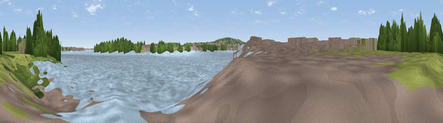

Viewpoint near Woolwich
#45016 in England · top 79% of its area beats it · near WoolwichThe view, rendered

A 360° render of this exact spot computed from the terrain model, tree cover and land cover — summer colours, afternoon light, calibrated against photographs of famous viewpoints. Real trees, hedges and buildings will differ in detail.
The panorama
Grey silhouette: terrain skyline in each direction (720 bearings, Earth curvature and refraction included). Dashed green: skyline with trees (+15 m) and buildings (+8 m) as obstacles. Blue strip: how far the ground is visible on each bearing.
Where the view opens
Wedge length = distance to the farthest visible ground on that bearing (vegetation-aware). Rings at 10, 25 and 50 km.
What fills the view
54% water · 26% woodland · 15% built-up · 5% grassland
Angular shares of the visible panorama (visual magnitude), not map area. Landscape diversity 0.49 (0–1 Shannon).
Key numbers
More beautiful places nearby
The staircase of upgrades: each row has a higher view potential than everything closer. Driving times are estimates from straight-line distance, calibrated against real road routing — check an actual route before setting out.
| Place | Direction | Drive | Score |
|---|---|---|---|
| Gallions Hill | SE · 1 km | ~3 min | 32.7 |
| Beckton Alps | NW · 2 km | ~5 min | 36.1 |
| Viewpoint near Woolwich | SSE · 3 km | ~8 min | 41.5 |
| Viewpoint near Woolwich | S · 4 km | ~8 min | 48.8 |
| Shooters Hill | S · 4 km | ~10 min | 50.4 |
| Viewpoint near Eltham | SSW · 5 km | ~11 min | 52.2 |
| Viewpoint near Erith | ESE · 8 km | ~16 min | 54.3 |
| Viewpoint near Ebbsfleet Valley | ESE · 17 km | ~30 min | 56.1 |
51.50793, 0.07984 · source: osm viewpoint · position refined by local search. Computed location — check access rights before visiting.